Overview
Design team
UX designer (me!)
Visual designer
Content designer
Timeline
July-Aug 2022
Platform
Web trading platform (target users: web beginner investors)
What was my value add?
- I worked on this, and other features, that provide long term value to trading products by dually addressing goals from business, and user needs
- I was treated as a regular team member, and had alot of fun with the investing UX, visual, content, and research teams! My immediate UX team would call me the sunshine of the design team which was so sweet 😭☀️
Identifying the user & business problem
“Wait a new feature was released?”
Upon request from business, the user research team at Questrade investigated the performance of recent new features launched. The business/product problem found was that:
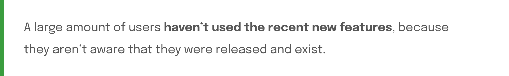This issue is important because:
- Business wants features they invest in to be helpful to users
- When users learned about the new features during testing sessions, they expressed feelings of shock and frustration, wishing they knew about the features earlier
The design problem statement is framed as follows:
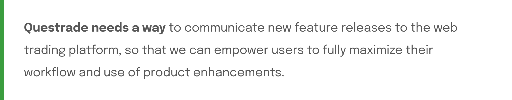What would success look like?
To define what I should work towards + what principles should guide my design decisions, I translated the user & business needs identified, to success metrics.
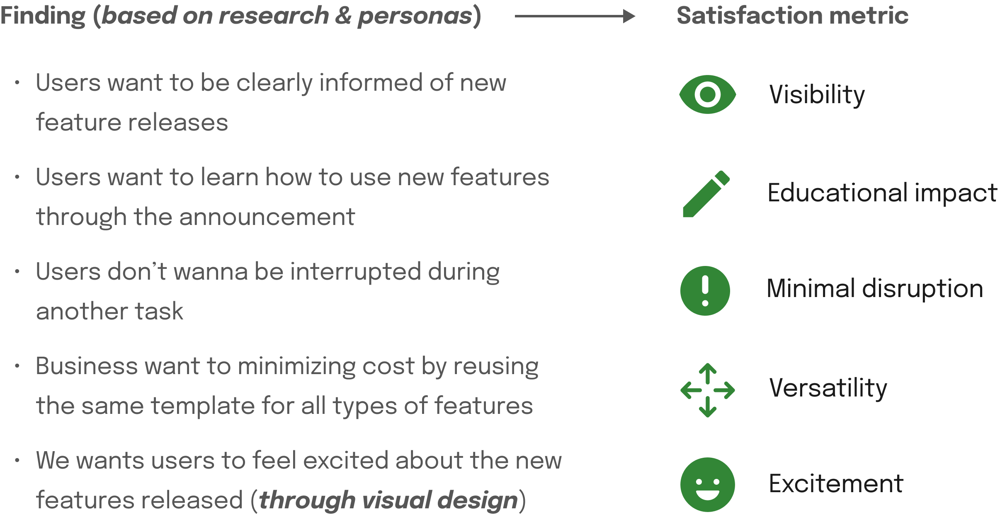The main solution goal can be summarized with the question:
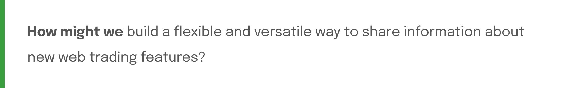Mid-fi concept ideation
- Early research talking to users hinted that feature announcements may be helpful in addressing the discoverability and engagement problem of new features.
- Business stakeholders, agreeing with the user research team, wanted this design project to stay within the scope of feature announcements, due to cost and resource constraints.
After some consideration from the UX side and agreeing with the stakeholder decision (given the needs and constraints), I began designing by looking into existing ways other platforms addressed the challenge of communicating new features.
Exploring concepts based on competitive analysis
4 common patterns were discovered after researching feature announcements on other platforms, which were used as a starting point for ideation.
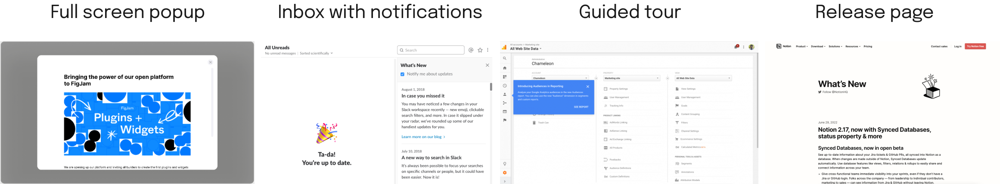These patterns were then explored in the context of announcements in the Questrade trading web platform, and evaluated according to the satisfaction metrics.
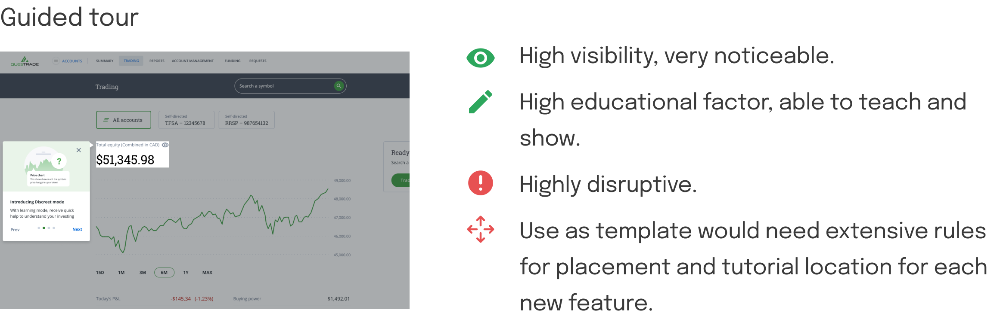 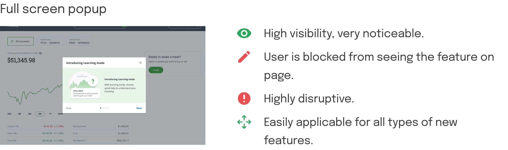 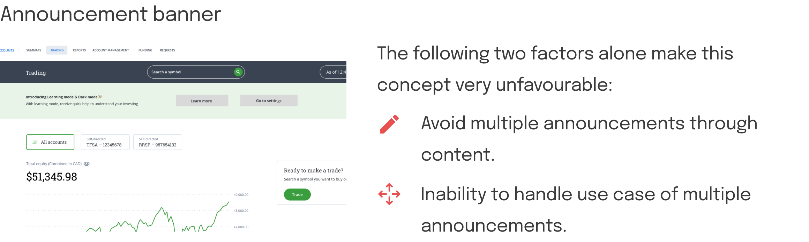 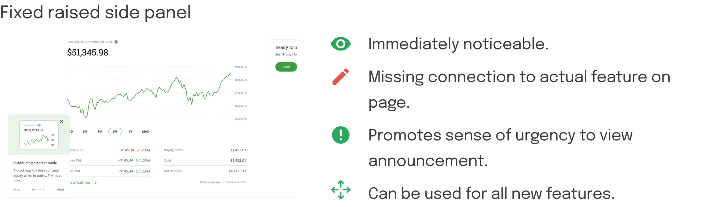 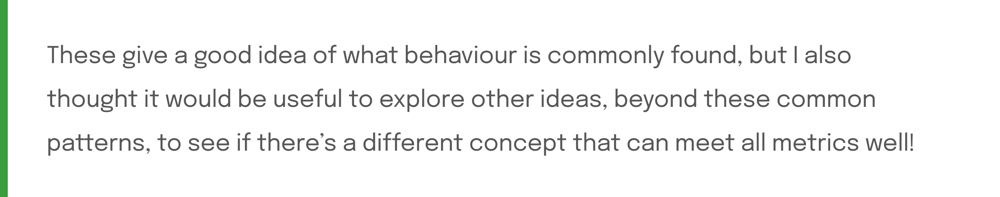Exploring concepts beyond common patterns
Beyond using the common patterns as a starting point, other unconventional ideas were also explored & evaluated to see if there are other ways to meet all metrics well.
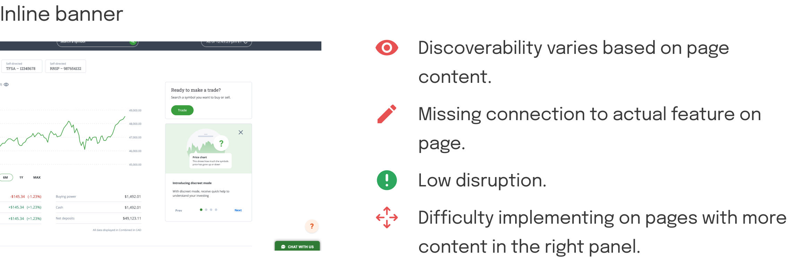 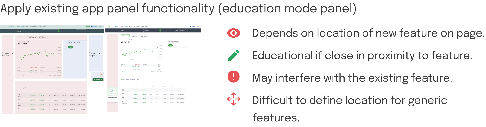 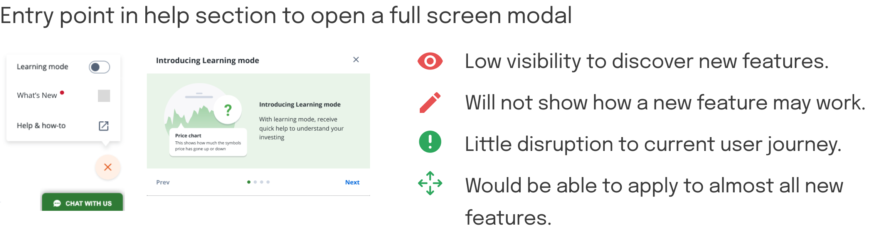 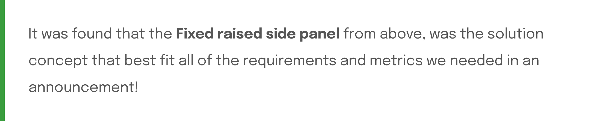Improving the selected concept
After discussion with stakeholders, including engineering, it was found that the concept liked by UX, was supported from the perspective of feasbility and constraints.
However, during the previous UX evaluation of the concept with the success metrics, it can be seen that the current concept did not quite address the educational impact as strongly as we wanted.
This concern was the basis of the next design challenge, to improve the feature:
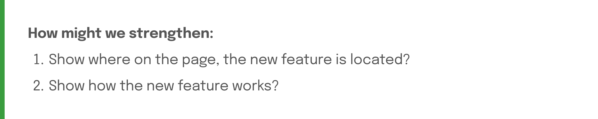To address the new challenge mentioned in the previous section but also keep the scope low, serveral concepts were ideated and explored to alter the details of the announcement. Ultimately, the following design decisions were made to improve the educational impact of the announcement modal:
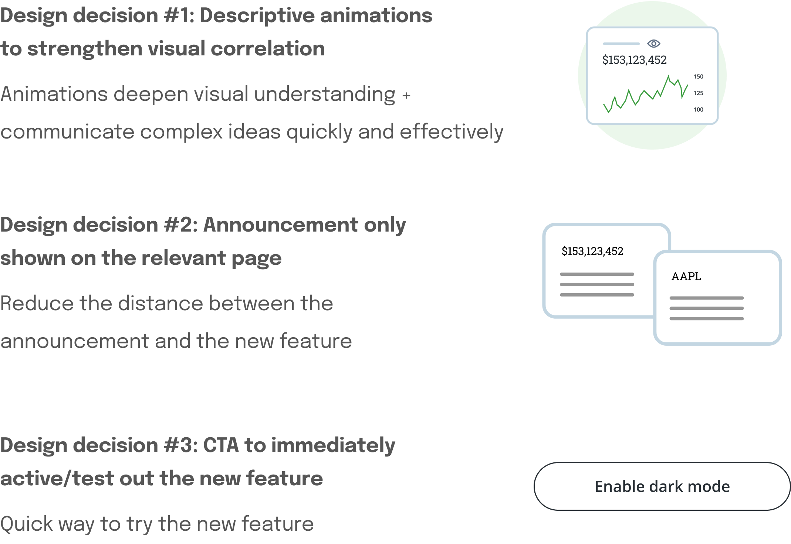Addressing edge cases
Many other decisions regarding the details of the announcement behaviour, including edge cases, also needed to be made. Some examples include:
Appearance logic of announcement model?
- What page does an announcement appear on if it affects general settings?
- What circumstances is an announcement triggered?
- How long from when a user arrives to a screen, does an announcement appear?
- Will a user ever see an announcement again on the same device? Different device?
- What should happen if the user leaves the page that the announcement appears on?
Maximum # of announcements?
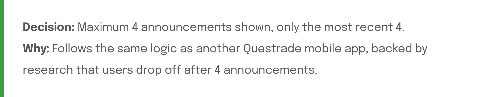Behaviour when education mode is toggled on, which uses the same screen space as announcements?
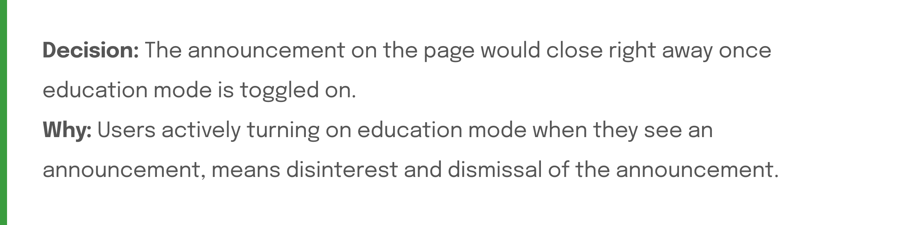Final design
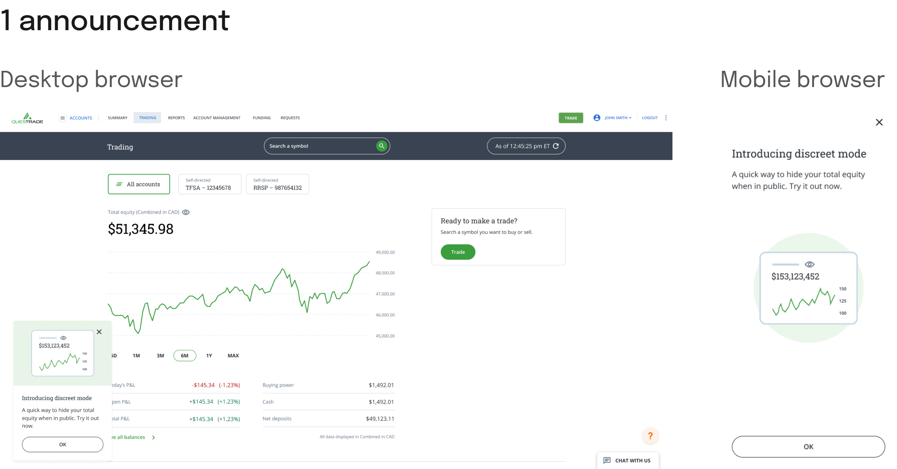 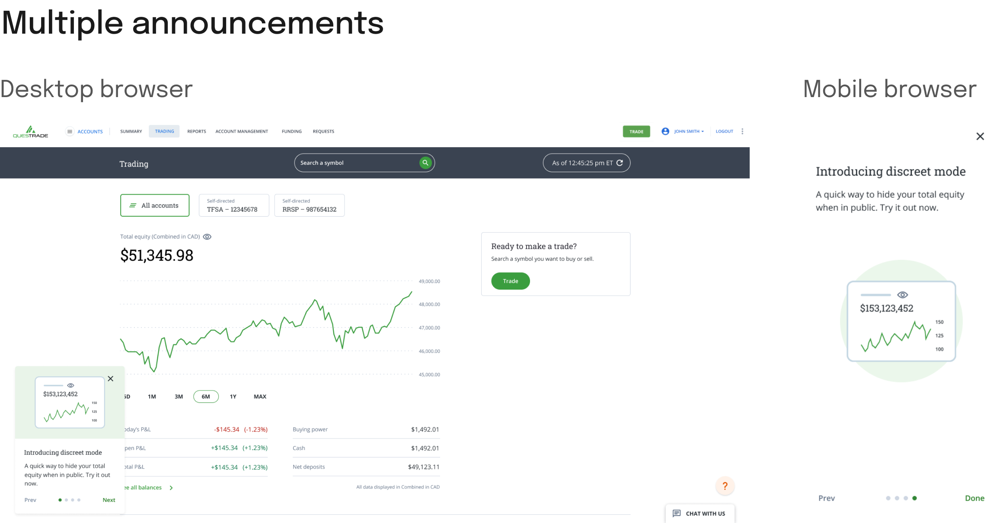Results
The feature is currently launched and live on the platform for over 75000+ users, and actively used by other web platform designers to announce new features!
Impact:
- Increased engagement of new features released
- Positive sentiment quoted from users, especially regarding the ability to test out features right from the announcement
- Increased speed of the design team launching new feature, with the use of the template
Learnings
- Collaborating with content & visual designers was a big learning during my internship! It really helped me learn about avoiding tunnel vision in my work, and helped continue to foster my focus on identifying + designing for edge cases.
- I also learned how important it was to stay broad and take versatility highly into account when making template design decisions! There are many unknowns for the use cases of a template, so my thinking needed to be adaptive and conceptual.